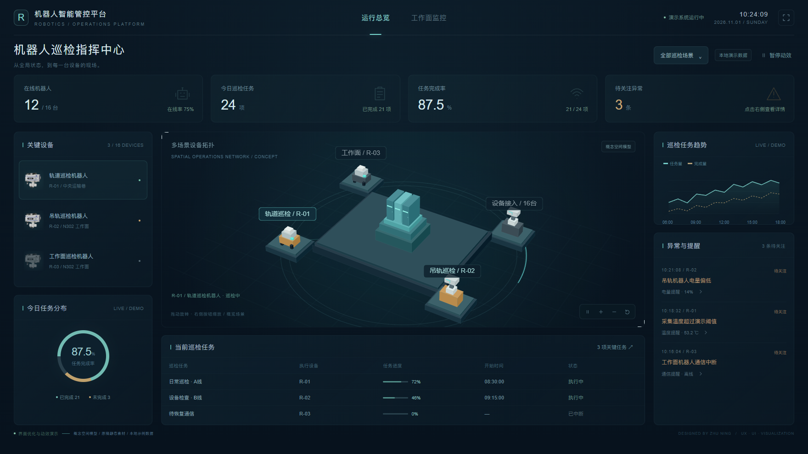
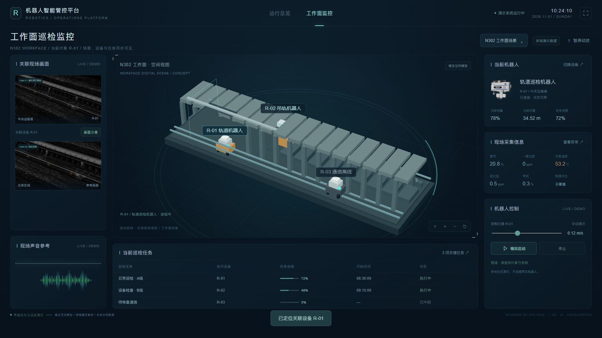
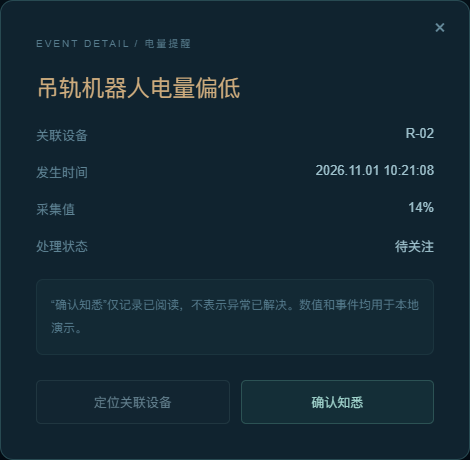
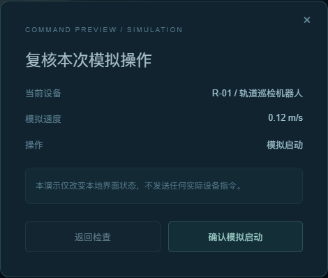
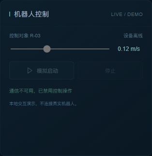

机器人智能管控平台
面向工作面巡检的工业B端平台，覆盖已开展的场景、设备、任务和监控设计。

煤矿工作面巡检涉及机器人、路线、任务点、视频与采集信息。设计需要让值守人员从全局发现异常，也能进入具体场景理解正在执行的任务。
面向工作面巡检的工业B端平台，覆盖已开展的场景、设备、任务和监控设计。
分析业务对象与页面关系，梳理操作流程；独立完成全部已开展业务页与大屏的交互和UI设计。
聚焦运行总览与工作面监控，将界面优化、空间动效和关键反馈组织为连续体验。
操作人员关心的不是一组独立图表，而是：哪台机器人，在哪个场景，正在执行什么任务，现场是否出现异常。
工作面 / 运输巷
身份 / 在线状态
任务点 / 进度
视频 / 采集 / 提醒
总览负责快速扫读设备、任务和异常；进入监控后，把空间和当前设备放到最重要的位置。
机器人选择成为稳定的上下文，关联任务、画面与控制区域一起变化，避免操作对象含糊。
动效用于解释空间、选择和状态。数值保持稳定，风险以局部语义色表达，减少无效闪烁。
将原稿同级排列的面板重新分组：上层是运营概况，中间是场景与设备关系，两侧提供设备入口和待关注异常，下方保留当前任务。
在线设备、任务总量、完成率与待关注异常构成第一层，单位、口径与分母清晰。
中央保留连续空间，设备以平台、连接和标签建立关系；细节放在关联面板里。
异常单独成区，点击进入详情，再定位相关机器人；确认知悉不等同于异常解决。
工作面监控保持同一套面板与语义色，将中心让给现场空间；设备身份、任务进度与控制对象持续可见。

从告警定位设备或从任务进入监控，当前机器人、画面状态和操作区都保留同一个选择。
离线设备保留身份和任务信息；画面说明通信状态，控制操作禁用，避免把“没有数据”误认为正常。
下面是一份可操作的本地演示。拖动空间场景、切换设备，或从异常进入监控，体验信息与操作之间的联系。
点击异常 → 查看详情 → 定位设备 → 进入关联监控。
调整速度 → 模拟启动 → 复核参数 → 观察响应 → 停止模拟。
拖动旋转、缩放或重置视角。支持暂停动效与减少动态效果偏好。
空间为程序绘制的概念模型；现场图、机器人图与声音波形为原稿静态素材。演示不连接真实设备、实时视频或现场数据。
空间动效建立观察角度，界面动效表达操作结果。持续运动与瞬时反馈分开处理，让演示保有现场感，也保有可读性。
概念模型以低速旋转呈现空间体量；拖动后停止自动巡航，随时恢复或重置。
总览巡航约 180s / 一周轨道扫描和节点流动提供持续变化感，不让正文、表格与业务数值跟着跳动。
局部动效 / 保持数值稳定控制操作经过复核；模拟发送后显示响应，停止后给出明确状态。离线时禁用控制。
复核 → 执行中 → 响应 / 停止


石墨深色建立统一背景，青色强调关联和交互，琥珀色表达关注。用字级、留白和面板层次组织体量，减少装饰边框的视觉竞争。
数字与文字分级呈现，单位降一级。
大屏以 1760 × 990 为展示基准，保持 16:9 等比阅读。
面板：10px圆角 / 低对比边界 / 标题标记
状态同时使用文案与颜色，不只依赖色相。
主操作与次操作区分，离线有禁用说明。
这次优化聚焦两张核心大屏，将原稿的业务关系转化为可演示的空间、对象与任务联动。后续再扩展场景配置与部署，不把未完成模块包装为全平台成果。
总览、监控、基础空间动效、设备切换、告警详情与知悉、关联任务、模拟控制及离线反馈。
信息优先级、远距离读数、告警处理习惯、控制状态与权限仍需在真实业务环境验证。